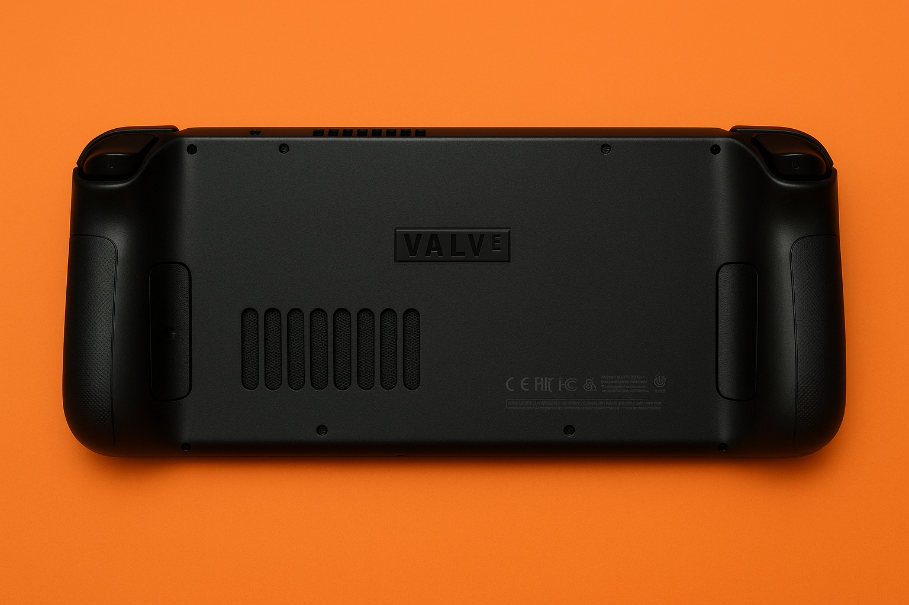

The Steam Deck is an innovative and powerful handheld gaming PC designed by Valve, the creators behind the popular Steam gaming platform. This device lets gamers enjoy their favorite titles anywhere, combining the vast Steam library with the portability usually associated with traditional gaming consoles. At its heart lies a custom AMD APU, providing impressive performance capable of handling even graphically demanding games with ease. The Steam Deck also boasts a comfortable ergonomic design, ensuring enjoyable gaming sessions whether you're traveling or relaxing at home.
The device is equipped with a 7-inch touchscreen, customizable controls, and support for external peripherals. With Linux under the hood, it also provides flexibility for software customization. Whether docked or handheld, the Steam Deck stands out for its versatility and user-friendly design.
| Component | Details |
|---|---|
| Processor | AMD APU (4-core Zen 2 CPU + 8 RDNA 2 CUs) |
| RAM | 16GB LPDDR5 |
| Storage | 64GB eMMC / 256GB NVMe SSD / 512GB NVMe SSD |
Visit the official Steam Deck website.
Read more on Wikipedia's Steam Deck page.